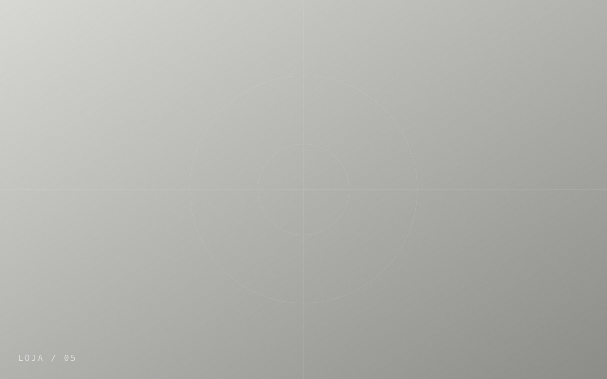

Material honesto
Nada de malha fina disfarçada de premium. O que está na etiqueta é o que está na peça, e a gramatura é informada em todos os produtos.
A LU.RICOS nasceu de uma pergunta simples: por que uma camiseta boa dura tão pouco? A resposta virou uma marca pequena, com poucos modelos, produzida perto de casa.

Começamos com uma camiseta e um moletom vendidos pelo Instagram. Dois anos depois, o catálogo tem doze modelos. Não é falta de ideia: é escolha. Cada peça nova precisa justificar a sua existência ao lado das outras.
Toda a produção é feita em São Paulo, em uma oficina parceira com a qual trabalhamos desde o início. Visitamos toda semana e aprovamos cada lote peça a peça.
Nada de malha fina disfarçada de premium. O que está na etiqueta é o que está na peça, e a gramatura é informada em todos os produtos.
Fazer a dez minutos de distância permite corrigir no meio do caminho e pagar justo para quem costura.
Edição numerada acaba. Pode voltar uma ideia parecida, em outro material; nunca a mesma peça.
Modelo Um sai com 100 unidades, vendidas pelo Instagram em duas semanas.
Moletom, calça e boné entram no catálogo. Nasce a linha permanente.
Jaqueta Modelo Seis, 100 peças com etiqueta interna numerada.
Abrimos um espaço pequeno em Pinheiros: loja, estoque e mesa de corte no mesmo lugar.
